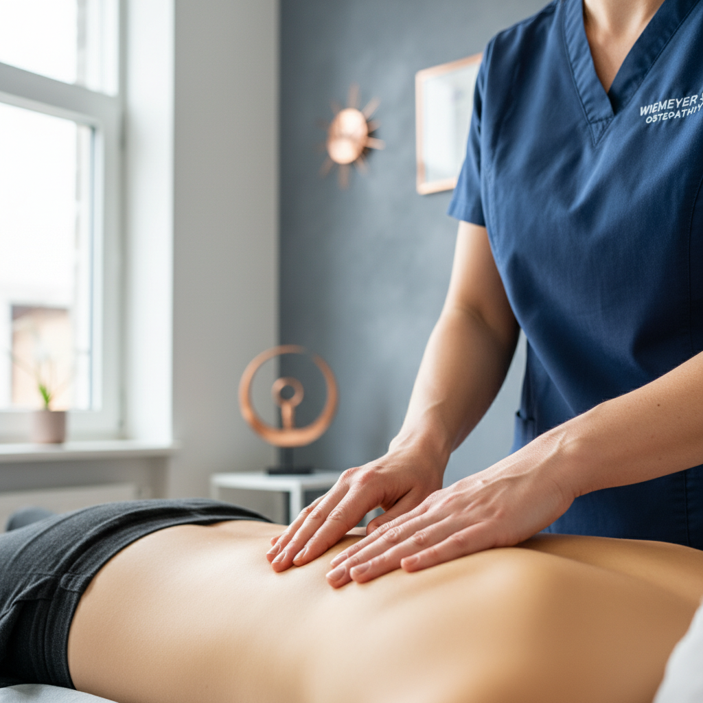
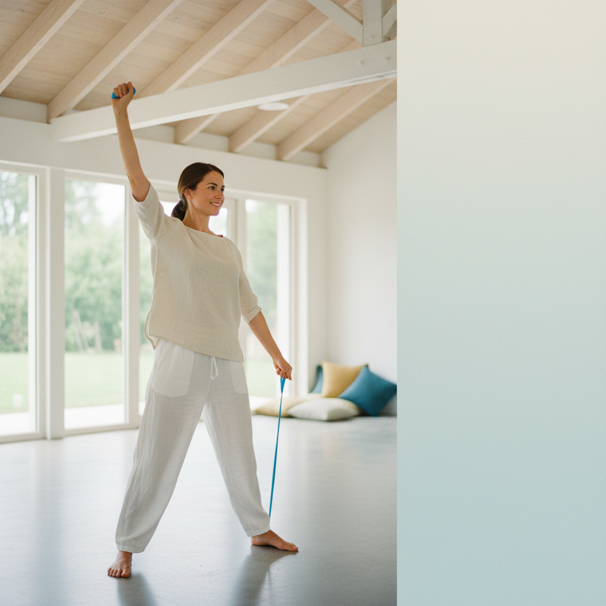
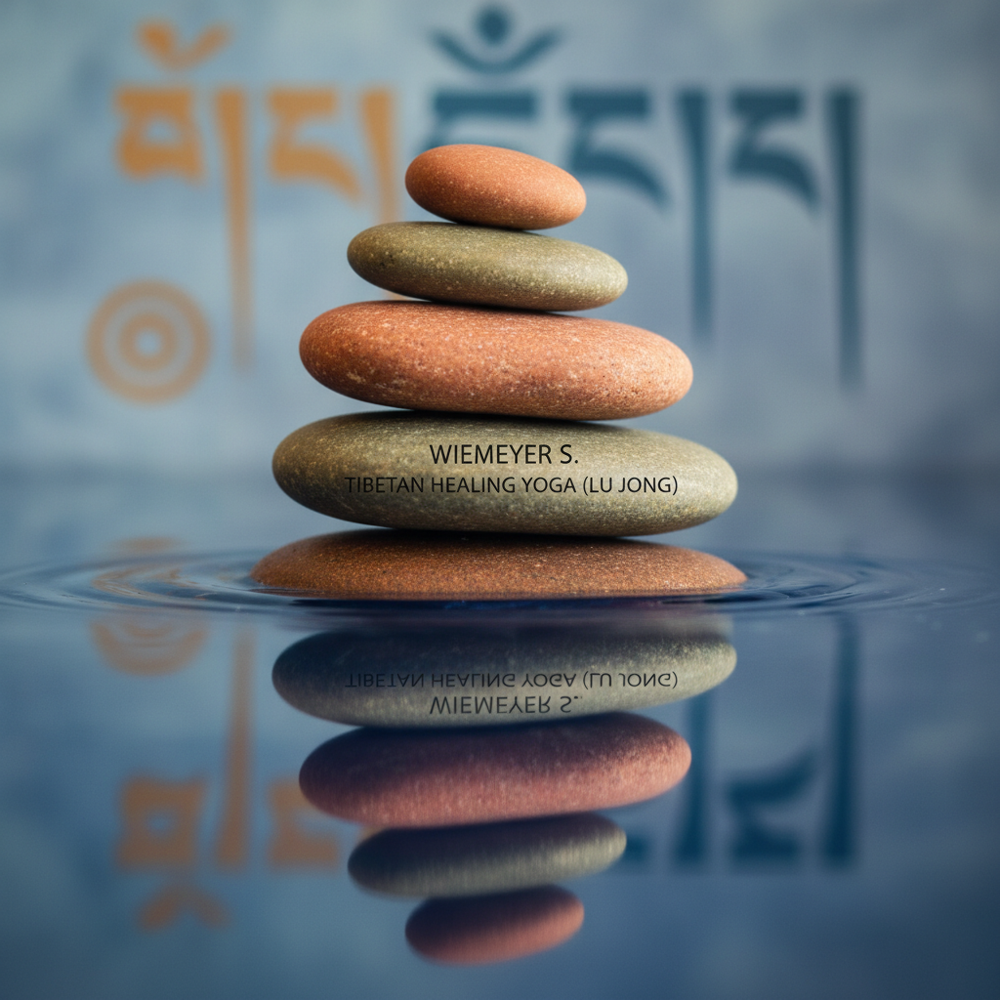

Ihr Weg zu ganzheitlichem Wohlbefinden
Verspannter Nacken? Unruhiger Schlaf? In unserer Praxis in Melle verbinden wir Osteopathie, Physiotherapie und tibetisches Heilyoga, damit Sie sich wieder rundum wohlfühlen.

Mehr als nur Symptome behandeln
In der heutigen schnelllebigen Zeit ist es wichtiger denn je, auf die eigene Gesundheit zu achten. Bei Wiemeyer S. in Melle bieten wir Ihnen einen ganzheitlichen Ansatz, der Körper, Geist und Seele in Einklang bringt. Wir nehmen uns Zeit für Sie, hören Ihnen zu und entwickeln gemeinsam einen individuellen Behandlungsplan.
Unser Ziel ist es, nicht nur Ihre Symptome zu lindern, sondern die Ursachen Ihrer Beschwerden zu finden und nachhaltig zu behandeln. Dabei setzen wir auf eine einzigartige Kombination aus bewährten Therapien und alternativen Heilmethoden.
- Ganzheitlicher Ansatz für Körper, Geist und Seele
- Individuelle Behandlungspläne für Ihre Bedürfnisse
- Erfahrene Heilpraktikerin und Osteopathin
Drei Säulen für Ihre Gesundheit

Osteopathie
Der Körper ist ein komplexes System, in dem alles miteinander verbunden ist. Die Osteopathie hilft, Blockaden zu lösen und die Selbstheilungskräfte zu aktivieren. Wir finden die Ursache Ihrer Beschwerden und behandeln sie sanft und effektiv.

Physiotherapie
Nach Verletzungen, Operationen oder bei chronischen Schmerzen unterstützt die Physiotherapie Sie dabei, Ihre Beweglichkeit und Funktion wiederherzustellen. Wir arbeiten aktiv mit Ihnen zusammen, um Ihre Ziele zu erreichen.

Lu Jong Yoga
Das tibetische Heilyoga Lu Jong ist eine sanfte und effektive Methode, um Körper und Geist in Einklang zu bringen. Durch die Kombination von Bewegung, Atmung und Meditation lösen Sie Blockaden und stärken Ihre Lebensenergie.

Was Patienten über uns sagen
Häufige Fragen
Nein, für eine osteopathische Behandlung benötigen Sie kein Rezept vom Arzt. Als Heilpraktikerin kann Frau Scholtissek Sie auch ohne Rezept behandeln.
Die Osteopathie betrachtet den Körper als Ganzes und sucht nach den Ursachen von Beschwerden. Die Physiotherapie konzentriert sich auf die Behandlung von Symptomen und die Wiederherstellung von Funktionen.
Ja, Lu Jong Yoga ist für Anfänger jeden Alters geeignet. Die Übungen sind sanft und können individuell angepasst werden.
Bereit für den ersten Schritt?
Kontaktieren Sie uns für ein Erstgespräch. Wir freuen uns darauf, Sie kennenzulernen.
Jetzt Termin anfragen